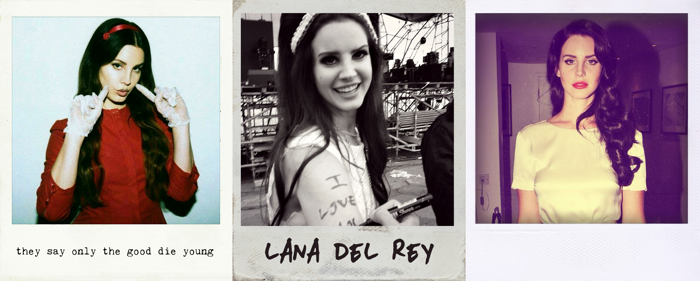

--------------------Polaroid Photography
The instant camera is a type of camera which uses self-developing film to create a chemically developed print shortly after taking the picture. Polaroid Corporation pioneered (and patented) consumer-friendly instant cameras and film, and were followed by various other manufacturers. The invention of commercially viable instant cameras which were easy to use is generally credited to American scientist Edwin Land, who unveiled the first commercial instant camera, the model 95 Land Camera, in 1948, a year after unveiling instant film in New York City. The earliest instant camera, which consisted of a camera and portable wet darkroom in a single compartment, was invented in 1923 by Samuel Shlafrock.
